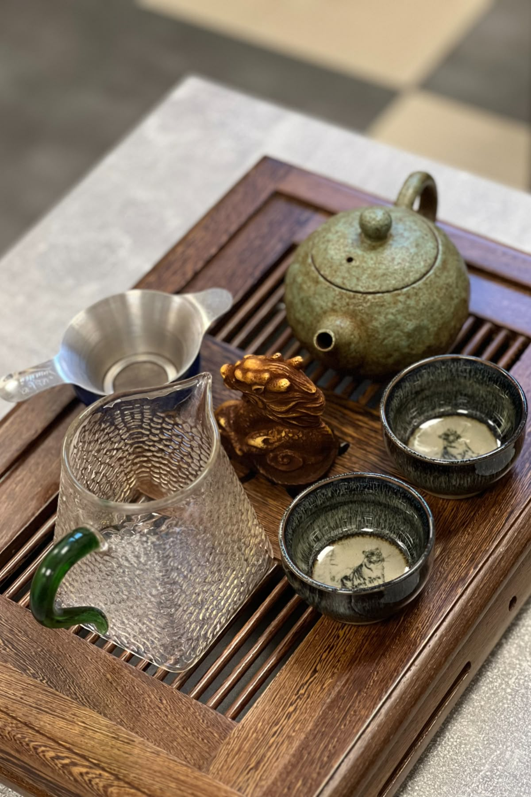
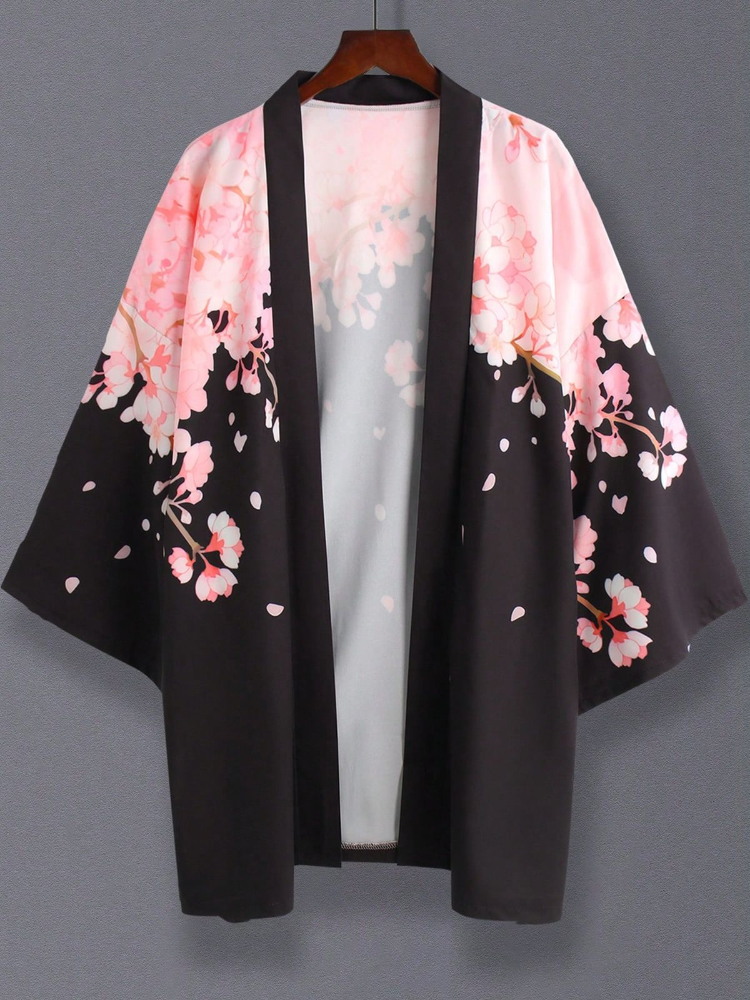
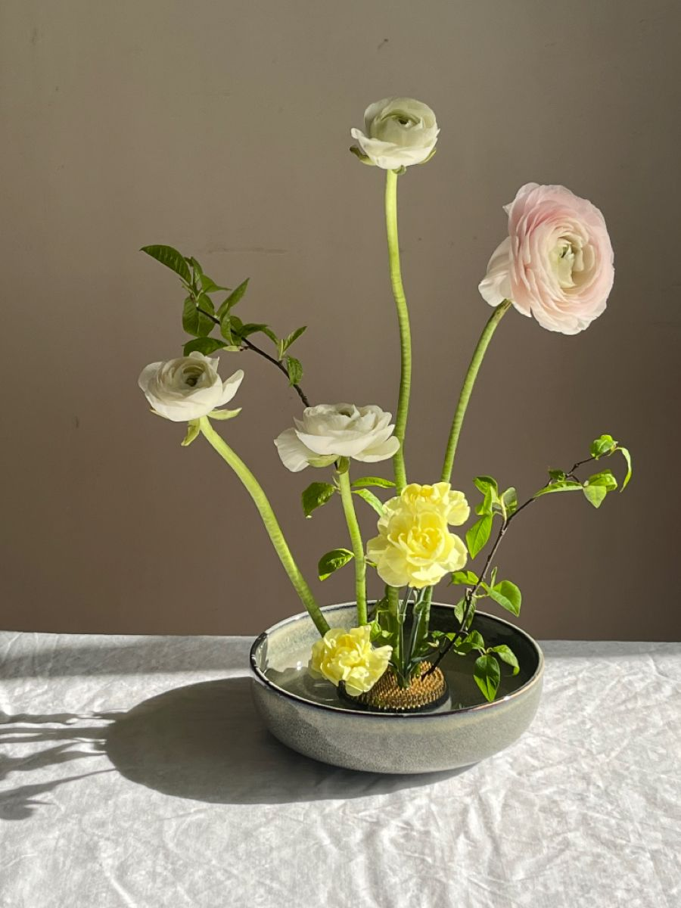
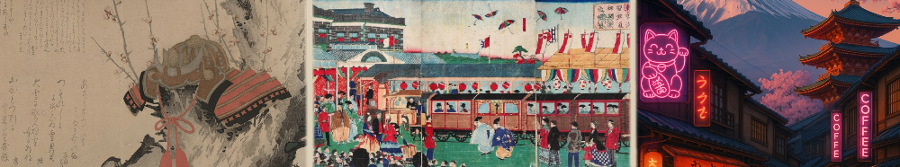

Культура и традиции

Чайная церемония
Искусство приготовления и подачи чая, наполненное глубоким философским смыслом.

Кимоно
Традиционная японская одежда, отражающая эстетику и культурные ценности.

Икебана
Искусство аранжировки цветов, выражающее гармонию между человеком и природой.
Исторические периоды
Эпоха самураев
Период феодальной Японии, когда страной управляли военные правители - сёгуны.
Период Мэйдзи
Эпоха модернизации и открытия Японии для внешнего мира.
Современность
Япония сегодня - гармония традиций и передовых технологий.
